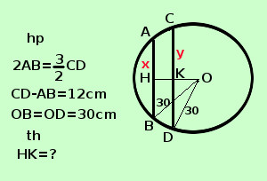

|
soluzione Risolvere il seguente problema In un cerchio di raggio 30 cm. vi sono 2 corde parallele e dalla stessa parte del cerchio rispetto al centro. Si determini la misura della loro distanza spendo che il doppio della minore equivale ai 3/2 della maggiore e che la differenza fra la maggiore e la minore e' di cm. 12  AB = xCD = y "il doppio della minore equivale ai 3/2 della maggiore" si scrive 2x = 3/2 y 4x - 3y = 0 "la differenza fra la maggiore e la minore e' di cm. 12 " si scrive y - x = 12cm x - y = -12
risolvo con il metodo di sostituzione
AB = 36cm CD = 48cm AH = 18cm DK = 24cm trovo OH applico il teorema di Pitagora al triangolo rettangolo OHB per trovare OH OH2 = BO2 - BH2 = (30 cm)2 - (18 cm)2= 900cm2 - 324 cm2 =576cm2 OH = √576 cm2 = 24 cm trovo OK applico il teorema di Pitagora al triangolo rettangolo OKD per trovare OK OK2 = OD2 - DK2 = (30 cm)2 - (24 cm)2= 900cm2 - 576 cm2 = 324cm2 OH = √324cm2 = 18 cm HK = HO - OK = 24cm - 18cm = 6cm la distanza fra le corde vale 6 cm |